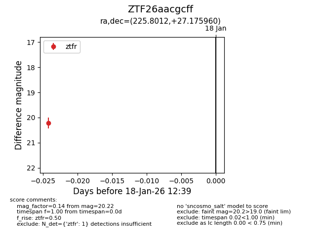
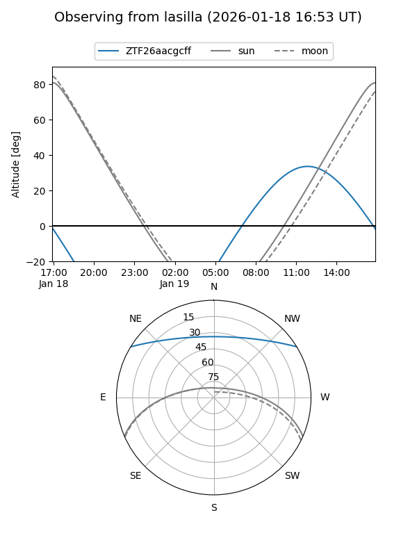
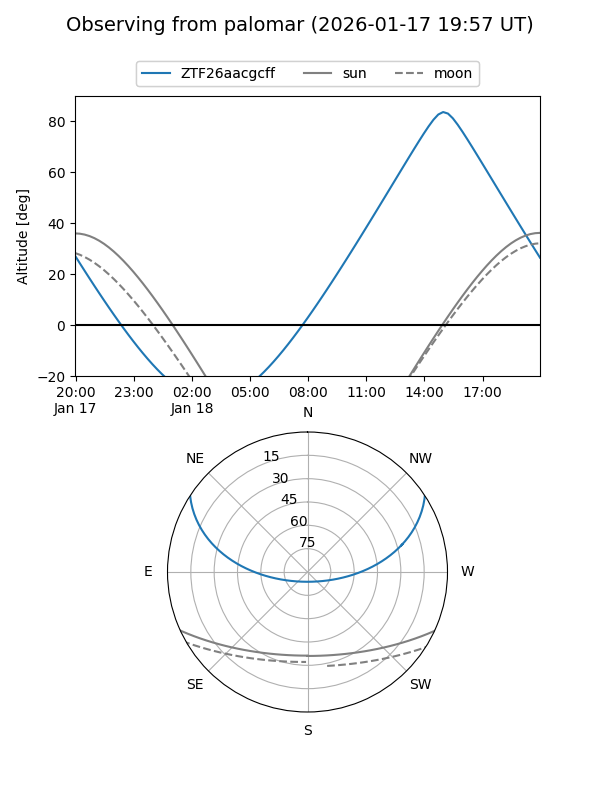

ZTF26aacgcff
Target ZTF26aacgcff at 2026-01-18 12:40
Aliases and brokers:
FINK: link
Lasair: link
ALeRCE: link
alt names
ZTF26aacgcff (ztf,fink_ztf)
Coordinates:
equatorial (ra, dec) = 225.8012,+27.17596
equatorial (HMS+DMS) = 15:03:12.28,+27:10:33.46
galactic (l, b) = (40.7069,+60.77476)
Flags:
Photometry:
last ztfr=20.22
1 ztfr detections
Lightcurve

Visibility


Additional plots